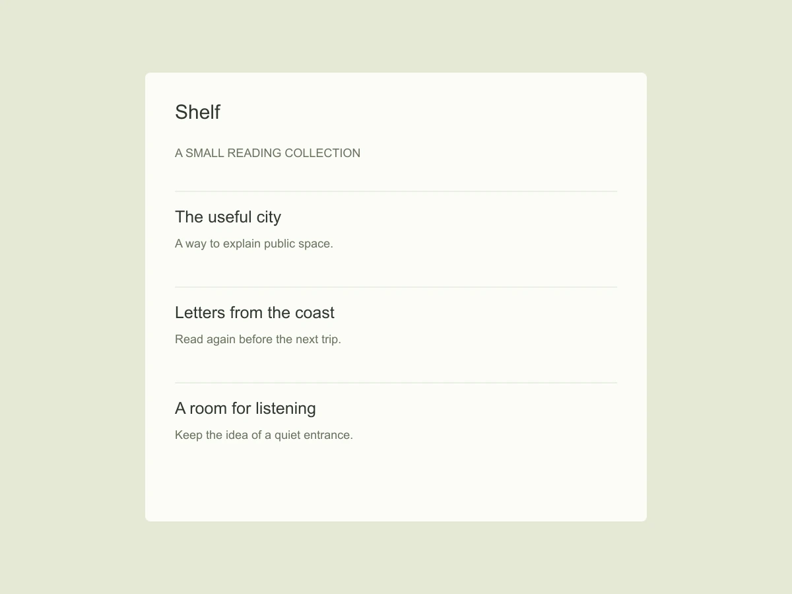
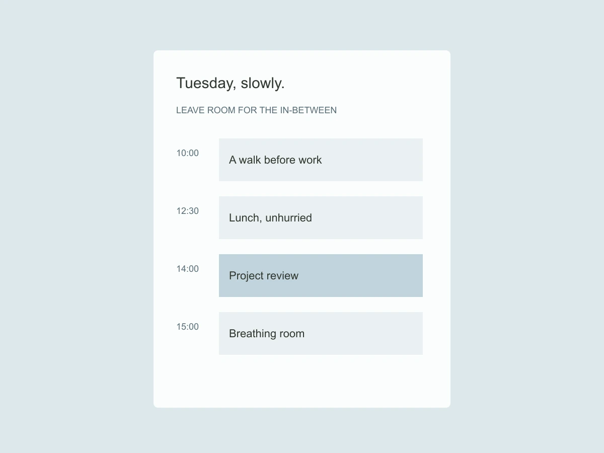
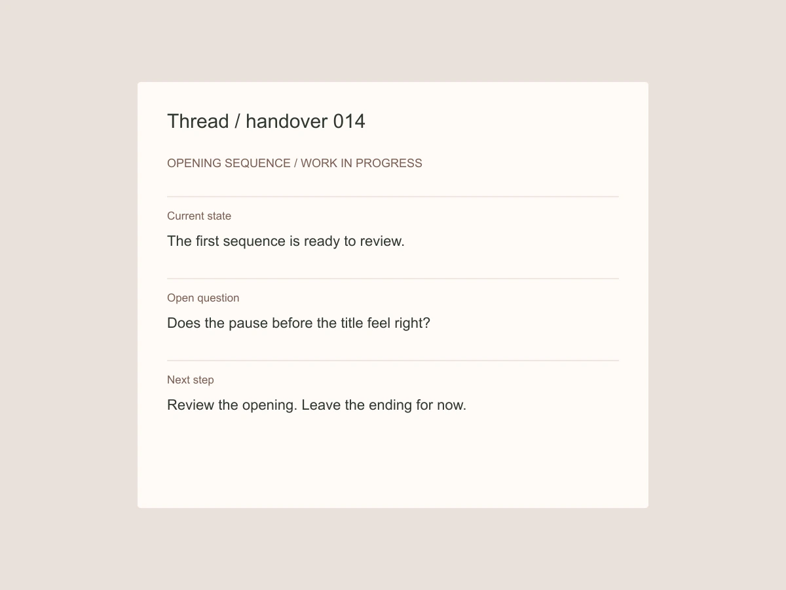

I design useful things
with a little room to breathe.
I'm Lena, an independent product designer interested in the small decisions that make everyday tools feel considered.
Currently exploring reading, time, and the spaces between people.
Based somewhere between a desk and a long walk.
Selected independent studies

Shelf
2026 ↗A quieter place to keep what you read.

Window
2025 ↗Making room between the things on a calendar.

Thread
2025 ↗A handover that explains what happens next.
A note on the work
These are self-initiated studies, not client launches. Each one starts with a small question and follows it through an interface, a few tradeoffs, and something still worth testing.